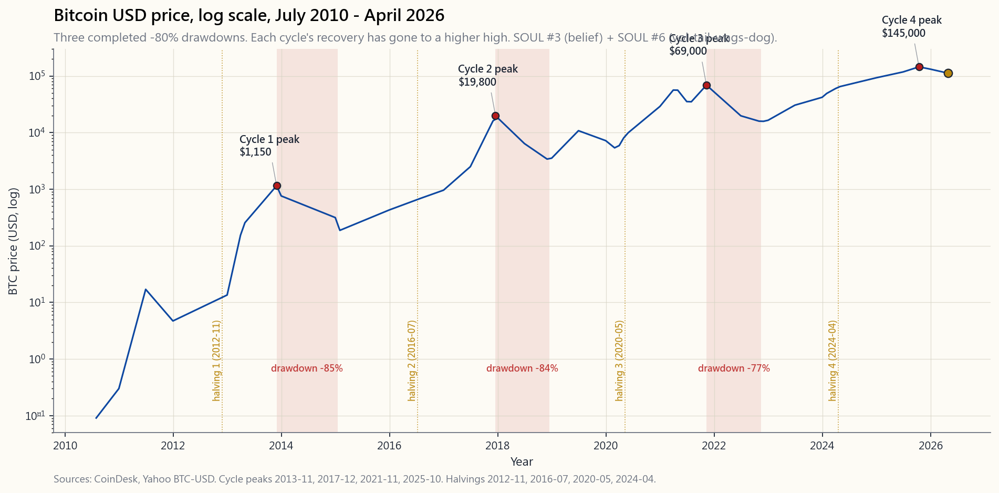
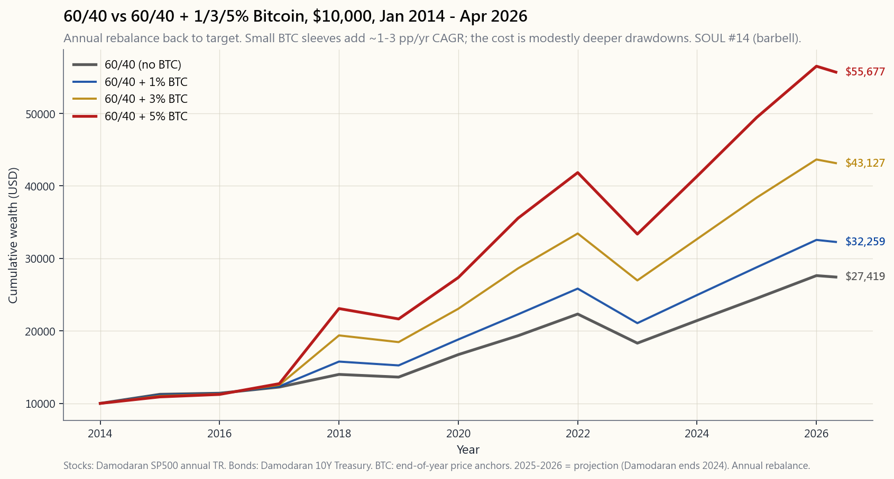

Side Lesson 09: Crypto in a Portfolio — Bitcoin, Ethereum, and the 1-5% Allocation Case
1. Why This Is Important
Bitcoin is sixteen years old. Over those sixteen years its price has gone from a fraction of a cent to north of one hundred thousand dollars, with two complete crashes of about minus-eighty-five per cent along the way. That is not a normal asset class life cycle. It is the life cycle of a brand-new monetary experiment running in real time, on a public ledger, in the open. Whether or not it is "real" is a store-of-value question (every store of value rests on belief), but the size of the market, the liquidity, and the fact that you can now buy it inside a brokerage account through an SEC-registered spot ETF means that ignoring it is no longer a neutral position — it is an active allocation decision.
Four reasons this lesson exists:
account, by name, without ever touching a private key.** The January 2024 spot Bitcoin ETF approvals (IBIT, FBTC, ARKB and eight others) and the July 2024 spot Ethereum ETF approvals (ETHA, FETH) are the single most important regulatory event in crypto's short history. The default for serious investors is US-listed names; spot ETFs collapse the crypto-as-asset-class question into the same wrapper as everything else in this tutorial. Before 2024, crypto required a separate exchange, a wallet, and a custody decision. After 2024, it is a ticker.
four times the S&P 500.** That single number is what makes sizing the position a math problem, not an opinion problem. You do not "buy crypto" the way you buy an index fund; you buy a tiny sliver of it, sized so that a minus-eighty-per-cent drawdown is a tolerable hit to the whole portfolio. The vol-tail-wags-the-dog frame is the cleanest one: a five-per-cent BTC sleeve at seventy-per- cent vol contributes about three-and-a-half percentage points to total portfolio vol, which is most of what a 60/40 portfolio's stocks contribute.
enough to discuss honestly.** Each cycle ran about four years peak-to-peak, each blew off the top with leverage and altcoins, and each washed out in an eighty-per-cent drawdown that took eighteen-to-twenty-four months to recover from. The 2024–2025 cycle, the first one with US institutional money inside the spot ETFs, is the first cycle where the peak did not require an exchange leverage flush — it ended with a more orderly fade. Three cycles is not a regime the way the 1970s inflation episode is a regime, but it is enough to retire the "BTC has no track record" argument.
traps.* The IRS treats crypto as property*, not as a security: that means there is no qualified dividend, no Section 1256 60/40 blended rate, no wash-sale rule (yet), and no automatic 1099-B cost-basis tracking on direct-held coins. The spot ETFs partially fix this — they trade like ETFs and cost-basis is tracked — but the underlying remains property. Tax via the wrapper is more of an edge here than in equities precisely because the tax code is still half-finished. Get the wrapper right and the net-of-tax outcome is a different asset class than getting it wrong.
The goal of this side lesson is to give you the half-dozen numbers and the one sizing rule that turn "should I own Bitcoin" from a philosophical argument into a sleeve-sized position in the four- tranche portfolio — small, deliberate, and in the right sub-account.

2. What You Need to Know
2.1 The Bitcoin Thesis in One Page — Twenty-One Million and Halvings
You can argue about Bitcoin's price for the next decade. You cannot argue about its supply schedule, because the supply schedule is the protocol. Two numbers carry the entire thesis:
- The maximum supply is 21,000,000 coins, ever. The cap is
- Every four years the new-coin issuance halves. The block
That is the entire "digital gold" thesis: a fixed-cap commodity-like asset whose new-supply rate is mechanically engineered to fall below gold's, with a globally-distributed validation network and no central issuer. Every other crypto debate is downstream of whether you accept that thesis or not. The honest framing is that this is a belief asset, the same as gold. The only question is the durability of the belief, and the only available evidence is fifteen years of price discovery, three completed boom-bust cycles, and a $2-trillion-ish market capitalisation that the legal and institutional system has chosen not to suppress.
The same framework applies, with a discount, to Ethereum (ETH). Ethereum is not fixed-supply — its issuance rate is variable and was even briefly negative after the 2022 Merge — but it has the second- largest network effect, the second-largest validator set, and the only spot ETF approval outside Bitcoin. Treat ETH as a smaller, more volatile, more "tech-flavoured" satellite to a BTC core if you hold either at all. Everything else (the so-called "altcoins") has not demonstrated equivalent durability and is, for the purposes of a portfolio lesson, noise.
2.2 The 2017 / 2021 / 2025 Cycles — Pattern, Not Coincidence
Bitcoin's price history is best read as three completed four-year cycles, each anchored by a halving, each ending in a roughly minus- eighty-per-cent drawdown:
- Cycle 1 (2013-2015) and the warm-up. Price ran from about $13
- Cycle 2 (2017-2018). Price ran from $1,000 in January 2017 to
- Cycle 3 (2020-2022). Price ran from $9,000 in early 2020 to
- Cycle 4 (2024-2025). Price ran from $42,000 at the January
Three things to take from the pattern. First, the peaks are roughly four years apart, anchored on the halving. That regularity will eventually break, but it has not yet, and the calendar is information. Second, the drawdowns are catastrophic. Minus eighty per cent is the modal outcome at the end of each cycle, not the tail. A retail investor who cannot stomach watching a position lose four- fifths of its value, on schedule, in a window of twelve to eighteen months, should not own this asset class. Third, each cycle's recovery has taken the price to a higher high than the previous cycle's peak. A buyer who entered at the absolute worst tick of the 2017 top (December 2017, $19,800) was underwater for three years and then doubled. A buyer at the 2021 top ($69,000) was underwater for about three years and then doubled. The pattern is brutal but ergodic — if the network thesis continues to hold.
2.3 The Volatility and the Drawdowns Are the Whole Sizing Problem
The number that decides whether crypto belongs in a portfolio at all is its annualised volatility, and it is unforgiving:
- Bitcoin daily volatility, fifteen-year average: roughly 70%
- Bitcoin maximum drawdown, fifteen-year history: -85% (2014)
- Ethereum daily volatility, eight-year average: roughly 90%
The math you cannot escape: a 5% BTC sleeve at 70% vol, held alongside a 95% portfolio of stocks-and-bonds at, say, 11% vol, contributes roughly $\sqrt{(0.95 \times 0.11)^2 + (0.05 \times 0.70)^2}$ ≈ 11.5% portfolio vol — about 50 basis points above the no-crypto baseline. The same arithmetic at a 10% BTC sleeve crosses 13% vol — you have meaningfully changed the risk profile of the whole portfolio to make room for the sleeve. *Above ten per cent, the BTC position is no longer a satellite — it is a co-driver of the portfolio's risk*, which violates the four-tranche logic for almost every investor's risk budget.
This is the entire reason the canonical retail allocation is 1-5% of investable assets, with 3% the centre of gravity. It is not a guess; it is the size at which BTC adds expected return without swamping the rest of the portfolio's variance contribution. In barbell terms: the BTC sleeve sits on the right edge of the barbell, with T-bills on the left, and the index-fund middle absorbs neither's volatility.

2.4 The Kelly Logic Behind 1-5%
The 1-5% range is not arbitrary. Run a fractional-Kelly calculation and the same answer falls out. Take Bitcoin's historical Sharpe (roughly 0.7-0.9 over the full sample, lower over rolling five-year windows), assume forward expected return of 15-25% per year (lower than the realised, which is the standard adjustment for an asset that has tripled its market cap during your sample), and assume vol holds at 60-70%. Full-Kelly says size the sleeve at *expected excess return divided by variance*: about (0.20 - 0.04) / 0.65² ≈ 38%.
Nobody runs full-Kelly on a single asset. The standard discount is quarter-Kelly to one-eighth-Kelly, which lands at roughly 5% to 10% of the portfolio. Apply a second discount for parameter uncertainty (your expected-return number is not a fact, it is a guess on a fifteen-year sample), and the practical sleeve falls to 1-5%. That is the same number the institutional consultants (BlackRock, Fidelity) landed on independently, and the same number a fractional-Kelly calculation produces. It is not three different answers; it is one answer arrived at three ways.
The other discipline is rebalancing. Without rebalancing, a 5% BTC sleeve that triples in a cycle becomes a 13% sleeve at the top — exactly when the four-cycle history says you should be trimming. With quarterly or annual rebalancing back to target, you mechanically sell into the cycle peaks and buy into the troughs, and the sleeve stays at the size you actually budgeted for. Most of the long-term contribution of a 1-5% BTC sleeve to a portfolio's CAGR comes from the rebalancing flow, not from buy-and-hold.
2.5 Spot ETFs vs Self-Custody — IBIT, FBTC, ETHA, and the Wrapper Choice
Before January 2024, owning Bitcoin through a US brokerage required either GBTC (a closed-end fund that traded at premiums/discounts of ±40%) or a direct holding through an exchange (custody risk, key management). The spot ETF approval changed that overnight.
The four wrappers worth knowing:
- IBIT (iShares Bitcoin Trust) — BlackRock's fund. Largest by
- FBTC (Fidelity Wise Origin Bitcoin Fund) — Fidelity's fund.
- ETHA (iShares Ethereum Trust) — BlackRock's spot Ethereum ETF,
- GBTC (Grayscale Bitcoin Trust) — the legacy product, converted
The wrapper choice matters for three reasons. Tax treatment: all four are 1099-B reporting, cost-basis tracked, and trade like an ETF in any taxable or retirement account — none of the headache of direct-held coin tax accounting. Custody: you outsource the key- management problem to a regulated custodian; for 99% of investors this is the right answer and replaces a meaningful tail risk (self-custody loss, exchange failure) with a small ongoing fee. Wrapper purity: spot ETFs hold the underlying coin one-to-one, unlike futures-based BITO (the 2021 product) which suffered a roughly 8-10% per year contango drag. Spot ETFs are the right wrapper for buy-and-hold; futures wrappers are for traders.
The case for direct self-custody is narrow: large positions (>$1 million) where the 0.25% fee is meaningful, ideological alignment with the original Bitcoin thesis ("not your keys, not your coins"), or use cases that require on-chain transactions (DeFi, payments). For the 1-5% sleeve in a tax-advantaged retirement account, the spot ETF is the unambiguously correct wrapper. The US-listed wrapper is the default.
2.6 Tax Treatment — Property, Not Security
The IRS classifies cryptocurrency as property (Notice 2014-21, unchanged through 2026). The consequences:
- No qualified dividend rate. Crypto pays no dividend in the
- No Section 1256 60/40 split. Unlike SPX options or futures,
- No wash-sale rule (yet). Section 1091 covers "stocks or
- Cost-basis is your problem if you hold direct coins. Direct
- No automatic IRA eligibility for direct coins. Most IRA
The single most actionable tax insight: **the wash-sale-rule absence makes crypto the cleanest tax-loss-harvesting asset in the US tax code right now.** Sell at any loss; rebuy immediately; realise the loss against ordinary income up to $3,000 per year and unlimited offset against capital gains. That advantage will not last forever. Use it while it does.
2.7 What Crypto Is Not — No Cash Flow, No Floor, No Yield
The honest catalogue of what crypto cannot do for a portfolio:
- There is no intrinsic floor. Stocks have earnings, real
- There is no qualified dividend or coupon income. A retiree who
- There is no obvious correlation hedge. BTC was supposed to be
- There is no consumer-protection backstop. Direct-held crypto
The right mental model is: BTC is a high-volatility, high-expected- return return asset. It belongs in the Stores-of-Value tranche at 1-5% portfolio weight, in a tax-advantaged wrapper when possible, sized for a tolerable drawdown contribution, and rebalanced on a fixed schedule. It is not a hedge. It is not a cash-flow source. It is not a savings account. It is, on the fifteen-year evidence, an investable asset class — and the position size that respects that evidence is small.
3. Common Misconceptions
market cap, fifteen years of continuous price discovery, and is held by US-listed ETFs custodied at SEC-registered firms. The "scam" framing was tenable in 2014, less so in 2018, and not at all in 2026. It is a belief asset — like gold and fiat — and the only honest question is the durability of the belief.
2022 evidence rejects this directly. CPI hit 9.1%, the dollar strengthened (DXY +8%), and BTC fell 65%. Whatever BTC is, it is not a mechanical inflation or dollar hedge. Belief asset, not structural hedge.
At 70% vol, a 20% sleeve makes BTC the dominant contributor to portfolio variance. The 1-5% range is what the math (and the barbell logic) supports. Larger positions are concentrated bets, not diversified holdings.
the 1-5% sleeve, the spot ETF (IBIT, FBTC, ETHA) is the better wrapper: lower friction, cost-basis tracked, IRA-eligible, no self-custody tail risk. Direct coin ownership is for amounts where the 0.25% fee is material or for use cases that need on-chain transactions.
way; the evidence is mixed at best. In 2020-2022 the rolling correlation with the Nasdaq ran at 0.5-0.7. In 2023-2025 it has averaged 0.3-0.4. Some diversification benefit, far less than the marketing suggests.
variable issuance schedule, a fundamentally different security model (proof-of-stake since 2022), and a meaningfully different thesis (it is a smart-contract platform, not a fixed-supply commodity). It is more volatile, has had deeper drawdowns, and has not demonstrated Bitcoin's network durability. Treat it as a smaller satellite, not as a substitute.
roughly twelve to eighteen months after the halving event. That is not a guarantee; it is a sample of three. Each cycle has had a different driver (retail mania 2017, institutional + COVID 2021, spot ETF 2024). The next one may not.
forever."** The IRS has signalled multiple times that it intends to extend §1091 to digital assets. Several legislative proposals are live in 2026. Use the loophole while it exists; do not build a long-term plan around it.
from 100%+ in the early years to 60-70% recently. That is still four times equity vol. Expecting it to converge to equity-like vol in a five- or ten-year window is a faith statement, not an evidence-based one. Size it for the vol it has, not the vol you wish it had.
(Circle) and USDT (Tether) carry counterparty and reserve-quality risk that bears no resemblance to FDIC-insured cash. The 2023 USDC depeg (Silicon Valley Bank exposure) is the canonical cautionary example. Treat stablecoins as a payment rail, not as a savings account.
4. Q&A
**Q: I am thirty-five with a 401(k) and a Roth IRA. Should I own Bitcoin?** A: A 1-5% sleeve, sized to your overall risk budget, held in the Roth IRA via IBIT or FBTC, rebalanced annually back to target. The Roth-and-spot-ETF combination means any future gain is tax-free, and the spot ETF is custodied by a regulated firm. Start at 1%, see how you feel through one cycle, scale to 3-5% if you can sit through a minus-eighty-per-cent drawdown without selling.
Q: Why a Roth IRA specifically, and not a taxable brokerage? A: Location matters. BTC is the highest-expected-return, highest-volatility asset most retail investors have access to. In a Roth, the upside is tax-free; in a taxable account, you owe long- term capital gains on the eventual exit, and the no-wash-sale-rule benefit only matters in the taxable account. The optimal split: hold the core BTC sleeve in the Roth, hold a smaller trading sleeve in the taxable account where you can harvest the no-wash-sale-rule advantage on each cycle's drawdown.
Q: IBIT vs FBTC — does it matter? A: Functionally, no. Both are spot Bitcoin ETFs at 0.25% expense ratio with regulated custody. IBIT has more AUM and tighter bid-ask spreads (a fraction of a basis point); FBTC uses Fidelity's in-house custody if you prefer that. For a buy-and-hold Roth IRA position, either works. Avoid GBTC unless you have an embedded capital gain — its 1.50% ER is six times the iShares fee.
Q: Should I dollar-cost-average into BTC or buy a lump? A: The Vanguard lump-vs-DCA evidence (Side 5) generalises — lump wins about two-thirds of the time on equities. Crypto's volatility makes the sample less stable, but the same principle applies: if you have the cash and you have decided on the allocation, deploy it. The exception is if your conviction is genuinely lower; in that case DCA across six to twelve months is a behavioural tool that prevents you from front-loading regret if the drawdown comes early.
Q: What about Ethereum? Bitcoin only? Both? A: For the first 1-3% of allocation, Bitcoin only — it has the longest track record, the cleanest thesis, the deepest liquidity, and the largest spot-ETF wrapper. If you want to push to 5%, add Ethereum via ETHA at roughly a one-quarter to one-third weight of the BTC sleeve. So a 5% crypto sleeve might be 4% BTC / 1% ETH. Beyond ETH, nothing else has demonstrated portfolio-grade durability.
**Q: My friend has 30% of his net worth in BTC and is up 5x. Should I do that?** A: Survivorship bias. Your friend who is up 5x is the one talking; the friends who sized similarly in 2017 or 2021 and got cut to a fifth are not posting. The 1-5% rule is sized for the *full distribution* of outcomes, not for the lucky tail. Alpha is rare, and concentrated alpha in a single high-vol asset is also a concentrated way to lose.
Q: What signals would tell me the cycle has topped? A: The four-cycle pattern suggests: (a) parabolic price action with double-digit weekly moves, (b) altcoin season — non-BTC tokens massively outperforming BTC for sixty to ninety days, (c) leverage in the futures market (open interest >$30B, funding rates persistently above 0.05% per eight hours), and (d) retail-survey indicators (Coinbase in the App Store top 10). All four were present at the 2017 and 2021 peaks. None of them are precise enough to time, but the combination is a credible "trim back to target" signal.
Q: What would change my mind on holding any BTC at all? A: Three regime breaks would close the case: (1) a successful fifty-one-per-cent attack on the network or a major protocol failure; (2) a coordinated US/EU/UK ban on regulated crypto wrappers; (3) a ten-year drawdown from which the price does not recover (i.e. the network effect breaks). None of these is impossible; none is currently indicated. Until one of them happens, the 1-5% sleeve is a reasonable exposure for an investor who has already maxed out their 401(k) and built an emergency fund.
Q: Is "Bitcoin is digital gold" a real thesis or a marketing line? A: Both. The thesis — fixed-supply, network-effect-protected, non-sovereign store of value — is real and has held up over fifteen years. The marketing line conflates the thesis with a reliable inflation hedge, which is not what gold has been either (see Side 6). Treat both gold and BTC as belief assets in the Stores-of-Value tranche, sized to the risk budget, and do not expect either to do the work of TIPS during an actual inflation regime.
**Q: How does a futures-based product like BITO compare to spot ETFs like IBIT?** A: BITO holds CME Bitcoin futures, which are typically in contango. The roll cost — selling expiring near-month futures and buying further- out futures at a higher price — has run 8-12% per year on average, which mostly destroys the long-term return. BITO is an acceptable tactical vehicle (briefly long for a few weeks); for buy-and-hold, spot ETFs (IBIT, FBTC) are the right wrapper.
Q: What is the interactive at the bottom of this lesson useful for? A: For sizing the position before you buy it, not after. Move the "BTC % of portfolio" slider from 0 to 10. Watch what happens to the expected return, the volatility, the Sharpe ratio, and — most importantly — the maximum drawdown. The sweet spot for most retail investors is 2-4%; above 5%, the BTC sleeve dominates the risk; below 1%, it does not move the needle. The lab is built to make that trade-off legible at the scale at which it actually compounds.
附加課程 09：加密貨幣與投資組合——比特幣、以太坊及 1-5% 配置方案
1. 為何重要
比特幣已有十六年歷史。在這十六年間，其價格從不足一分錢漲至逾十萬美元，期間經歷了兩次近乎跌去八成五的完整崩盤。這不是一個正常資產類別的生命周期，而是一場全新貨幣實驗在公開賬本上即時運行的生命周期。它是否「真實」是一個價值儲存的問題（所有價值儲存工具都依賴信念），但市場的規模、流動性，以及現在可以透過受 SEC 監管的現貨交易所買賣基金在經紀帳戶中買入的事實，意味著「無視」它已不再是中立立場——而是一個主動的資產配置決定。
本課程存在的四個理由：
本附加課程的目標，是給你六個數字和一條倉位規則，將「我應否持有比特幣」從哲學辯論，轉化為四槓桿投資組合中一個小而審慎、放在正確子帳戶的倉位。
2. 你需要知道的事
2.1 比特幣投資論點一頁版——兩千一百萬與減半
你可以就比特幣的價格爭論十年。但你無法爭辯其供應時間表，因為供應時間表就是協議本身。整個論點由兩個數字支撐：
- 最大供應量為 21,000,000 個幣，永久有效。 上限由網絡上的每個節點以共識強制執行。截至 2026 年 4 月，約 1,985 萬個已被開採。餘下約 115 萬個將在未來百餘年間以漸近方式滴出。沒有任何委員會可以投票提高上限；如此做將是一次硬分叉，而網絡憑借十五年的顯示偏好，必然會拒絕。
- 每四年新幣發行量減半。 區塊獎勵於 2009 年起為每區塊 50 個比特幣，2012 年 11 月降至 25，2016 年 7 月降至 12.5，2020 年 5 月降至 6.25，2024 年 4 月降至 3.125，2028 年將進一步降至 1.5625。目前新增供應量約佔現有流通量的 0.85% 每年——已低於黃金約每年 1.5% 的礦產供應增速，且仍在下降。
同樣的框架，打折後適用於以太坊（ETH）。以太坊的供應量不固定——其發行率是可變的，且在 2022 年合并後甚至短暫出現負值——但它擁有第二大的網絡效應、第二大的驗證者集合，以及比特幣之外唯一獲批的現貨交易所買賣基金。若持有其中任何一個，應將以太幣視為比特幣核心的一個較小、波動性更大、更具「科技風味」的衛星配置。其餘所謂「山寨幣」尚未展現同等的持久性，就投資組合課程的目的而言，屬於噪音。
2.2 2017 年 / 2021 年 / 2025 年的周期——規律，而非巧合
比特幣的價格歷史最適合以三個已完成的四年周期來解讀，每個周期以一次減半為錨，每個周期都以約八成的最大回撤告終：
- 周期一（2013–2015）及暖場。 價格從 2013 年 1 月約 13 美元，漲至 2013 年底 1,150 美元，再跌至 2015 年初 200 美元——最大回撤八成三。這是 Mt. Gox 時代，大部分流通量集中在一家東京交易所，而該交易所隨即倒閉。
- 周期二（2017–2018）。 價格從 2017 年 1 月 1,000 美元，漲至 2017 年 12 月 19,800 美元（原初的散戶狂熱），再跌至 2018 年 12 月 3,200 美元——最大回撤八成四。期貨於高點推出（CBOE/CME，2017 年 12 月），讓機構首次擁有可沽空的工具；這與頂部時機的巧合並非偶然。
- 周期三（2020–2022）。 價格從 2020 年初 9,000 美元，漲至 2021 年 11 月 69,000 美元，再於 FTX/三箭資本/Luna 爆雷中跌至 2022 年 11 月 15,500 美元——最大回撤七成七。這個周期摧毀了加密貨幣最差勁的中間人（中心化借貸平台、槓桿「收益」平台），並推動倖存者走向受監管的包裝。
- 周期四（2024–2025）。 價格從 2024 年 1 月現貨交易所買賣基金推出時的 42,000 美元，漲至 2025 年底約 145,000 美元，再跌至 2026 年 4 月約 112,000 美元——目前最大回撤約二成三，是首個有大量美國機構資金透過受監管包裝入場的周期。這個周期是否以傳統的八成暴跌收場，還是以結構性更淺的回撤告終，是 2026 年懸而未決的問題。
2.3 波動性與最大回撤——這就是整個倉位問題
決定加密貨幣是否適合納入投資組合的數字，是其年化波動性，而這一數字毫不留情：
- 比特幣日均波動性，十五年均值： 年化約 70%。對比：標普 500 為 16–19%；納斯達克 100 為 22–26%；黃金為 15%；長期國債（TLT）為 14%；迷因股最瘋狂時為 60–80%。比特幣高居所有流動資產類別波動性排行之首。
- 比特幣最大回撤，十五年歷史： -85%（2014 年）、-84%（2018 年）及 -77%（2022 年）。三次回撤均深於自 1932 年以來標普 500 任何單次最大回撤。
- 以太坊日均波動性，八年均值： 年化約 90%，每個周期低谷的最大回撤均深於比特幣。
這正是標準散戶配置為可投資資產的 1–5%，以 3% 為重心的全部理由。這不是猜測；而是在這一規模下，比特幣增加預期回報而不淹沒投資組合其餘部分方差貢獻的大小。以啞鈴策略而言：比特幣倉位置於啞鈴右端，短期國庫券置於左端，中間的指數基金部分不承擔任何一方的波動性。
2.4 1–5% 背後的凱利邏輯
1–5% 的範圍並非任意而定。進行分數凱利計算，亦得出相同答案。取比特幣的歷史夏普比率（全樣本約 0.7–0.9，滾動五年窗口則較低），假設前瞻預期回報為每年 15–25%（低於實際值，這是針對樣本期間市值三倍增長的標準調整），並假設波動性維持在 60–70%。完整凱利表示倉位大小為預期超額回報除以方差：約 (0.20 - 0.04) / 0.65² ≈ 38%。
沒有人對單一資產應用完整凱利。標準折扣為四分之一至八分之一凱利，落點約為投資組合的 5–10%。再施加參數不確定性的第二重折扣（你的預期回報數字不是事實，而是對十五年樣本的猜測），實際倉位便落入 1–5%。這與機構顧問（貝萊德、富達）獨立得出的數字相同，也與分數凱利計算得出的數字相同。這不是三個不同的答案；而是以三種方式得出的同一個答案。
另一個紀律是再平衡。若不再平衡，一個在某個周期翻三倍的 5% 比特幣倉位，到頂部時將膨脹為約 13% 的倉位——恰好是四個周期的歷史表明你應該減持的時候。透過每季度或每年再平衡至目標倉位，你機械地在周期高峰賣出、在低谷買入，而倉位始終維持在你實際預算的規模。1–5% 比特幣倉位對投資組合複合年均增長率的長期貢獻，大部分來自再平衡流量，而非買入持有。
2.5 現貨交易所買賣基金與自我託管——IBIT、FBTC、ETHA 及包裝選擇
2024 年 1 月之前，透過美國經紀持有比特幣，要麼透過 GBTC（一種以±40% 溢價或折價交易的封閉式基金），要麼透過交易所直接持有（存在託管風險與私鑰管理問題）。現貨交易所買賣基金的批准一夜之間改變了局面。
值得了解的四種包裝：
- IBIT（iShares Bitcoin Trust） — 貝萊德旗下基金。按資產管理規模計最大（截至 2026 年 4 月約 580 億美元）。開支比率 0.25%（初始 12 個月豁免已屆滿）。託管方：Coinbase。機構的事實標準選擇。
- FBTC（Fidelity Wise Origin Bitcoin Fund） — 富達旗下基金。自我託管（Fidelity Digital Assets，內部）。資產管理規模約 200 億美元，開支比率 0.25%。適合已偏好富達平台的投資者。
- ETHA（iShares Ethereum Trust） — 貝萊德旗下以太坊現貨交易所買賣基金，2024 年 7 月獲批。資產管理規模約 50 億美元，開支比率 0.25%。現貨以太坊基金中規模最大者。
- GBTC（Grayscale Bitcoin Trust） — 舊有產品，2024 年 1 月轉換為交易所買賣基金。開支比率 1.50%——是 iShares 費率的六倍。持有它的唯一理由，是你有嵌入式長期資本增值不希望實現。否則，應切換至 IBIT。
直接自我託管的理由十分狹窄：大額倉位（逾 100 萬美元，0.25% 費率已屬重大），意識形態上認同比特幣原旨（「非你私鑰，非你的幣」），或需要鏈上交易（去中心化金融、支付）的使用場景。對於稅務優惠退休帳戶中 1–5% 的倉位，現貨交易所買賣基金是毫無疑問的正確包裝。美國上市包裝是預設選擇。
2.6 稅務處理——財產，而非證券
美國國稅局將加密貨幣定性為財產（2014-21 號通知，截至 2026 年未有更改）。其後果如下：
- 無合資格股息稅率。 加密貨幣本就不派發股息，因此這僅與質押獎勵（收取時按普通收入徵稅）及礦工（按公平市值計算的區塊獎勵作普通收入）有關。
- 無第 1256 條款 60/40 稅率分拆。 與標普 500 期權或期貨不同，加密貨幣增值純粹按標準一年持有期計算短期或長期資本增值。
- 尚無洗售規則。 第 1091 條款涵蓋「股票或證券」。截至 2026 年 4 月，美國國稅局拒絕將其延伸至加密貨幣。這意味著你可以在 12 月賣出比特幣以進行稅務虧損收割，並在 1 月 2 日重新買入——此舉在股票中屬違法。多項立法提案已提出關閉這一漏洞；請勿假設此情況會持續。
- 若直接持有加密幣，成本基礎追蹤是你自己的責任。 交易所針對質押收入發出 1099-MISC，但不一定發出交易的 1099-B；美國國稅局最終將強制規定成本基礎申報（2025 年 Form 1099-DA），但在此之前，責任在你。現貨交易所買賣基金完全避免此問題——它們是交易所買賣基金包裝內受 1099-B 申報的證券。
- 直接持有加密幣無法自動納入個人退休帳戶。 大多數個人退休帳戶託管方不允許直接持有加密貨幣。現貨交易所買賣基金可在任何標準經紀個人退休帳戶中持有。 位置很重要：將比特幣倉位放在 Roth IRA 中，任何未來增值均可免稅，鑒於此資產的波動性狀況，它是特別適合 Roth IRA 的資產。
2.7 加密貨幣不能做什麼——無現金流、無底部支撐、無收益率
加密貨幣對投資組合無法提供的能力，誠實目錄如下：
- 沒有內在底部支撐。 股票有盈利，房地產有租金，債券有票息和到期還款。比特幣一無所有。價格完全由信念支撐，而一次協調充分的信念轉移，理論上可將其推至零。十五年的樣本外測試令人鼓舞，但並不全面。
- 沒有合資格股息或票息收入。 需要現金流的退休人士，無法直接從比特幣獲得任何收入。解決收入問題的方法不是「比特幣提供收益率」，而是「在再平衡時將比特幣倉位裁減回目標，裁減所得用於資助退休預算。」
- 沒有明顯的相關性對沖作用。 比特幣本應與其他資產不相關。然而在 2022 年的風險規避市場中，比特幣下跌 65%，標普 500 下跌 25%，TLT 下跌 31%；相關性高且為正值。近期樣本（2023–2025 年）顯示相關性較低（約 0.3–0.4），但比特幣尚未贏得趨勢跟蹤或長波動率期權那樣的長波動率角色。將其視為高波動性的回報增強工具，而非分散投資工具。
- 沒有消費者保護後盾。 直接持有的加密貨幣不受 SIPC 保險保障。穩定幣不受 FDIC 存款保險保障。自我託管的損失是永久性的。現貨交易所買賣基金在經紀層面受 SIPC 保障（針對經紀倒閉，而非底層幣跌至零）。
3. 常見誤解
4. 問答
問：我三十五歲，有 401(k) 和 Roth IRA。我應否持有比特幣？ 答：按整體風險預算確定 1–5% 的倉位，透過 IBIT 或 FBTC 持有於 Roth IRA 中，每年再平衡至目標。Roth IRA 加現貨交易所買賣基金的組合，意味着任何未來增值均免稅，且現貨交易所買賣基金由受監管公司託管。從 1% 開始，觀察自己在一個周期中的感受，若能坐得住八成的最大回撤而不賣出，再逐步增至 3–5%。
問：為何特別是 Roth IRA，而非應稅經紀帳戶？ 答：位置很重要。比特幣是大多數散戶投資者可接觸到的預期回報最高、波動性最大的資產。在 Roth IRA 中，上行收益免稅；在應稅帳戶中，最終退出時須繳納長期資本增值稅，而無洗售規則的優惠僅在應稅帳戶中有意義。最優分配：將核心比特幣倉位置於 Roth IRA，將較小的交易性倉位置於應稅帳戶，在每個周期下跌時收割無洗售規則的優惠。
問：IBIT 與 FBTC——有差別嗎？ 答：功能上，沒有。兩者均為開支比率 0.25% 的比特幣現貨交易所買賣基金，且有受監管的託管。IBIT 資產管理規模更大，買賣差價更窄（不足一個基點）；FBTC 使用富達的內部託管，若你偏好富達可考慮。對於 Roth IRA 的買入持有倉位，兩者均適用。除非你有嵌入式資本增值不願實現，否則避免 GBTC——其 1.50% 的開支比率是 iShares 費率的六倍。
問：我應否分批買入比特幣，還是一次過買入？ 答：Vanguard 關於一次過投入與平均成本法的研究結論（附加課程五）可以推廣應用——在股票上，一次過投入約三分之二時間勝出。加密貨幣的波動性使樣本不那麼穩定，但原則相同：若你有資金且已決定好配置，就部署它。例外情況是，若你的信念確實較低；那時平均成本法覆蓋六至十二個月是一種行為工具，可防止你在下跌早期到來時承受前重後輕的悔恨。
問：以太坊怎樣？只買比特幣？還是兩者都買？ 答：在首個 1–3% 的配置中，只買比特幣——它有最長的歷史紀錄、最清晰的論點、最深的流動性，以及最大的現貨交易所買賣基金包裝。若你想推至 5%，透過 ETHA 加入以太坊，大約佔比特幣倉位的四分之一至三分之一。例如，5% 的加密貨幣倉位可以是 4% 比特幣加 1% 以太坊。以太坊之外，沒有任何其他資產展現出投資組合級別的持久性。
問：我朋友的淨資產有 30% 在比特幣，升了五倍。我應否效仿？ 答：這是倖存者偏差。你的朋友升了五倍，才有人說；那些在 2017 年或 2021 年以同等倉位買入、資產縮減五分之一的朋友，都沒有在廣而告之。1–5% 的規則是針對全部可能結果的分布而確定的，而非針對幸運的尾部。阿爾法十分罕有，而在單一高波動性資產上集中押注，也是集中虧損的方式。
問：什麼信號告訴我周期已到頂？ 答：四個周期的規律顯示：(a) 拋物線式價格走勢，每週雙位數升幅；(b) 山寨幣季——非比特幣代幣在六十至九十天內大幅跑贏比特幣；(c) 期貨市場槓桿（未平倉合約逾 300 億美元，資金費率持續高於每八小時 0.05%）；(d) 散戶情緒指標（Coinbase 登上 App Store 十大）。以上四點在 2017 年和 2021 年高峰均同時出現。這些信號都不夠精確到可以擇時，但四者同現是一個可信的「裁減至目標倉位」訊號。
問：什麼情況會讓我改變對持有任何比特幣的看法？ 答：三種制度性突破將終結這個案例：(1) 網絡遭受成功的 51% 攻擊或重大協議故障；(2) 美國/歐盟/英國協調禁止受監管加密貨幣包裝；(3) 十年最大回撤後價格無法復原（即網絡效應崩潰）。這些都不是不可能；目前均無跡象。在其中之一發生之前，1–5% 的倉位對已充分利用 401(k) 並建立應急儲備的投資者而言，是合理的敞口。
問：「比特幣是數字黃金」是真實的論點還是行銷說辭？ 答：兩者皆是。論點——固定供應、受網絡效應保護、非主權價值儲存——是真實的，並在十五年間站穩腳跟。行銷說辭則將論點與可靠的通脹對沖相混淆，而這不是黃金的表現（見附加課程六）。將黃金和比特幣均視為價值儲存倉位中的信念資產，按風險預算確定規模，並不要期望任何一者在實際通脹時期發揮通脹掛鉤證券（TIPS）的作用。
問：BITO 這類基於期貨的產品與 IBIT 這類現貨交易所買賣基金相比如何？ 答：BITO 持有芝商所比特幣期貨，通常處於期貨溢價狀態。滾動成本——賣出即將到期的近月期貨並以較高價格買入更遠月的期貨——平均每年約 8–12%，基本上摧毀了長期回報。BITO 是可接受的戰術性工具（短暫持有幾週）；若要買入持有，現貨交易所買賣基金（IBIT、FBTC）才是正確包裝。
問：本課程底部的互動工具有何用處？ 答：在買入之前確定倉位規模，而非之後。將「比特幣佔投資組合比例」滑桿從 0 移至 10。觀察預期回報、波動性、夏普比率——最重要的是——最大回撤的變化。大多數散戶投資者的甜蜜點在 2–4%；超過 5%，比特幣倉位主導了風險；低於 1%，它對結果毫無影響。這個工具旨在讓這一取捨在實際複利規模上清晰可見。
附加課程 09：加密貨幣與投資組合——比特幣、以太幣，以及 1-5% 配置的邏輯
1. 為什麼這堂課很重要
比特幣已誕生十六年。在這十六年間，其價格從不到一美分漲至逾十萬美元，途中經歷兩次跌幅約負八十五%的完整崩盤。這不是一個正常資產類別的生命週期，而是一場全新貨幣實驗在公開帳本上即時運行的生命週期。它是否「真實」，是一個價值儲存的問題（所有價值儲存工具都建立在信念之上），但以其市值規模、流動性，以及如今可透過 SEC 核准的現貨指數股票型基金在券商帳戶中直接買入的事實來看，忽視它已不再是中性立場，而是一個主動的資產配置決策。
這堂課存在的四個理由：
這堂附加課的目標，是給你幾個關鍵數字和一條規模原則，讓「我該不該持有比特幣」從哲學辯論，變成四部位投資組合中一個規模明確、深思熟慮、配置在正確子帳戶的小型部位。
2. 你需要知道的事
2.1 比特幣論題一頁說明——二千一百萬枚與減半機制
你可以對比特幣的價格爭論十年。但你無法對其供應時間表提出異議，因為供應時間表就是協議本身。整個論題由兩個數字支撐：
- 最大供應量為 21,000,000 枚，永久不變。 這個上限由網路上的每個節點通過共識強制執行。截至 2026 年 4 月，已開採約 1,985 萬枚。剩餘的約 115 萬枚將在未來百餘年間以漸近線方式緩慢釋出。沒有任何委員會可以投票提高上限；這樣做等同於硬分叉，而根據十五年的實際偏好揭示，網路將予以拒絕。
- 每四年新幣發行量減半。 區塊獎勵從 2009 年的每區塊 50 枚比特幣起算，2012 年 11 月降至 25 枚，2016 年 7 月降至 12.5 枚，2020 年 5 月降至 6.25 枚，2024 年 4 月降至 3.125 枚，2028 年將降至 1.5625 枚。當前的年新增供應量約為現有流通量的 0.85%——已低於黃金約 1.5% 的年礦產供應增長，且仍在持續下降。
同樣的框架也適用於以太幣（ETH），但有所折扣。以太坊並非固定供應——其發行速率是可變的，2022 年「合併」（The Merge）後甚至短暫出現負發行——但它擁有第二大的網路效應、第二大的驗證者集合，以及比特幣以外唯一通過的現貨指數股票型基金。如果你持有任何一種，請將以太幣視為比特幣核心的一個較小、更高波動、更具「科技色彩」的衛星部位。其他所有標的（所謂的「山寨幣」）尚未展現出同等的持久性，就投資組合課程的目的而言，皆屬雜訊。
2.2 2017/2021/2025 的週期——規律，而非巧合
比特幣的價格歷史，最好解讀為三個完整的四年週期，各以一次減半為錨，各以約負八十%的回撤告終：
- 第一週期（2013-2015）及暖身期。 價格從 2013 年 1 月的約 13 美元漲至 2013 年底的 1,150 美元，隨後在 2015 年初跌至 200 美元——回撤幅度負八十三%。這是 Mt. Gox 時代，大部分流通量集中在單一一家東京交易所，而該交易所隨即倒閉。
- 第二週期（2017-2018）。 價格從 2017 年 1 月的 1,000 美元漲至 2017 年 12 月的 19,800 美元（原始的散戶狂熱），隨後在 2018 年 12 月跌至 3,200 美元——回撤幅度負八十四%。期貨在頂部附近推出（芝加哥期權交易所/CME，2017 年 12 月），為機構提供了第一個可做空的工具；這與頂部時機的巧合並非偶然。
- 第三週期（2020-2022）。 價格從 2020 年初的 9,000 美元漲至 2021 年 11 月的 69,000 美元，隨後在 FTX/三箭資本/Luna 崩潰事件中，於 2022 年 11 月跌至 15,500 美元——回撤幅度負七十七%。這個週期摧毀了加密貨幣中最糟糕的中介機構（中心化借貸平台、槓桿「收益」平台），並將倖存者推向受監管的架構。
- 第四週期（2024-2025）。 價格從 2024 年 1 月現貨指數股票型基金推出時的 42,000 美元漲至 2025 年底的約 145,000 美元，隨後在 2026 年 4 月回落至約 112,000 美元——目前回撤幅度較溫和的負二十三%，是第一個有大量美國機構資金流入受監管架構的週期。本週期是否將以傳統的負八十%清洗告終，還是結構性的較淺回撤，是 2026 年仍待回答的問題。
2.3 波動性與回撤，就是整個部位規模的核心問題
決定加密貨幣是否適合納入投資組合的關鍵數字，是其年化波動性，且這個數字毫不留情：
- 比特幣日波動性，十五年平均： 年化約七十%。作為對比：標普 500 為 16-19%；那斯達克 100 為 22-26%；黃金為 15%；長期國庫券（TLT）為 14%；表現最差時的梗概股票為 60-80%。比特幣在所有流動資產類別的波動性排名中位居榜首。
- 比特幣最大回撤，十五年歷史： -85%（2014 年）、-84%（2018 年）、-77%（2022 年）。三次回撤均深於標普 500 自 1932 年以來任何一次的單次回撤。
- 以太幣日波動性，八年平均： 年化約九十%，且每個週期谷底的回撤均深於比特幣。
這就是為什麼標準散戶配置為可投資資產的 1-5%，以 3% 為重心。這不是猜測；這是比特幣在增加預期報酬的同時，不淹沒整個投資組合變異數貢獻的規模。以槓鈴策略來說：比特幣部位位於槓鈴的右端，短期國庫券在左端，中間的指數基金部分不承擔任何一方的波動性。
2.4 支持 1-5% 的凱利公式邏輯
1-5% 的範圍並非憑空而來。進行分數凱利計算，得出的答案相同。取比特幣的歷史夏普比率（全樣本約 0.7-0.9，在滾動五年窗口期間較低），假設前瞻預期報酬為年化 15-25%（低於已實現的報酬，這是針對樣本期間市值翻倍資產的標準調整），並假設波動性維持在 60-70%。全額凱利公式要求的部位規模為預期超額報酬除以變異數：約（0.20 - 0.04）/ 0.65² ≈ 38%。
沒有人在單一資產上押滿凱利。標準折扣是四分之一至八分之一凱利，落點約為投資組合的 5% 至 10%。再對參數不確定性施加第二重折扣（你的預期報酬數字不是事實，而是對十五年樣本的猜測），實際部位就落在 1-5%。這與機構顧問（黑岩、富達）各自得出的數字相同，也與分數凱利計算得出的數字相同。這不是三個不同的答案；這是用三種方法得出的同一個答案。
另一個紀律是再平衡。若不再平衡，一個在一個週期內翻三倍的 5% 比特幣部位，在頂部可能成長為 13% 的部位——恰好是四個週期的歷史告訴你應該減倉的時候。透過每季或每年再平衡回目標，你會機械式地在週期峰值賣出，在谷底買入，部位維持在你實際預算的規模。1-5% 比特幣部位對投資組合年化複合成長率的大部分長期貢獻，來自再平衡流量，而非買入持有。
2.5 現貨指數股票型基金與自我保管——IBIT、FBTC、ETHA 及架構選擇
2024 年 1 月以前，透過美國券商持有比特幣需要：GBTC（一檔相對淨值存在 ±40% 溢折價的封閉型基金），或透過交易所直接持有（保管風險、私鑰管理）。現貨指數股票型基金的核准一夜之間改變了這一切。
四種值得了解的架構：
- IBIT（iShares Bitcoin Trust）——黑岩旗下基金。截至 2026 年 4 月，管理資產規模（AUM）最大（約 580 億美元）。費用率 0.25%（初始十二個月費率減免已到期）。保管人：Coinbase。機構的實際預設選擇。
- FBTC（Fidelity Wise Origin Bitcoin Fund）——富達旗下基金。自行保管（富達數位資產，自建）。AUM 約 200 億美元。費用率 0.25%。適合已有富達生態偏好的投資人。
- ETHA（iShares Ethereum Trust）——黑岩旗下的現貨以太幣指數股票型基金，2024 年 7 月核准。AUM 約 50 億美元，費用率 0.25%。現貨以太幣基金中規模最大的。
- GBTC（Grayscale Bitcoin Trust）——舊有產品，2024 年 1 月轉換為指數股票型基金。費用率 1.50%——是 iShares 費率的六倍。持有它的唯一理由，是你有未實現的長期資本利得不想觸發。否則，請轉換至 IBIT。
適合自我保管的情況很少：大規模部位（超過 100 萬美元，0.25% 費率才顯著）、與比特幣原始論題的意識形態契合（「沒有你的私鑰，就不是你的幣」），或需要鏈上交易的使用情境（DeFi、支付）。對於在稅務優惠退休帳戶中配置 1-5% 的部位，現貨指數股票型基金是明確無誤的正確架構。美國掛牌架構是預設選擇。
2.6 稅務處理——財產，而非有價證券
IRS 將加密貨幣分類為財產（2014-21 號公告，至 2026 年未有更動）。其後果如下：
- 沒有合格股利稅率。 加密貨幣本就不派發股利，因此這只影響質押獎勵（在收到時按普通收入課稅）和礦工（按公平市值計算的區塊獎勵按普通收入課稅）。
- 沒有第 1256 條的六四分割。 與標普 500 選擇權或期貨不同，加密貨幣的資本利得是純粹的短期或長期資本利得，依標準一年持有期計算。
- 目前沒有洗售規則。 第 1091 條涵蓋「股票或有價證券」。截至 2026 年 4 月，IRS 尚未將其延伸至加密貨幣。這意味著你可以在十二月以虧損賣出比特幣進行稅損收割，然後在 1 月 2 日重新買入——這在股票市場是違法的。已有多個立法提案提出封閉這個漏洞；不要假設它會一直存在。
- 若直接持有實幣，成本基礎的追蹤是你自己的責任。 直接交易所對質押收益發出 1099-MISC，但不一定對交易發出 1099-B；IRS 最終將強制要求成本基礎申報（2025 年 1099-DA 表格），但在此之前，舉證責任在你身上。現貨指數股票型基金完全避免了這個問題——它們是在指數股票型基金架構內以 1099-B 申報的有價證券。
- 直接持有實幣不能自動存入個人退休帳戶（IRA）。 大多數 IRA 保管人不允許直接持有加密貨幣。現貨指數股票型基金可在任何標準券商 IRA 中持有。 帳戶位置很重要：考量到其波動性特徵，將比特幣部位放在 Roth IRA 中，未來的任何利得均可免稅，因此它是特別適合 Roth 的候選標的。
2.7 加密貨幣做不到的事——沒有現金流、沒有底部、沒有殖利率
誠實列舉加密貨幣無法為投資組合做到的事：
- 沒有內含底部。 股票有盈餘，不動產有租金，債券有票面利率和到期還本。比特幣一樣都沒有。價格完全由信念支撐，而足夠協調的信念轉移，原則上可以將其送至零。十五年的樣本外測試令人鼓舞，但並不完整。
- 沒有合格股利或票息收入。 需要現金流的退休人士，無法直接從比特幣獲得任何收入。解決方案不是「比特幣提供殖利率」，而是「在再平衡時修剪比特幣部位回目標，修剪所得的現金支應退休預算。」
- 沒有明確的相關性對沖效果。 比特幣本應是低相關資產。但在 2022 年的風險規避行情中，比特幣跌了 -65%，標普跌了 -25%，TLT 跌了 -31%；相關性高且為正。近期樣本（2023-2025 年）顯示相關性較低（約 0.3-0.4），但比特幣尚未贏得趨勢跟隨或長波動性選擇權那樣的長期波動性角色。將其視為高波動性的報酬增強工具，而非分散投資工具。
- 沒有消費者保護兜底機制。 直接持有的加密貨幣不受 SIPC 保障。穩定幣不受 FDIC 保障。自管損失是永久性的。現貨指數股票型基金在券商層面受 SIPC 保障（針對券商倒閉，而非底層幣歸零）。
3. 常見迷思
4. 問答
問：我三十五歲，有 401(k) 和 Roth IRA。我應該持有比特幣嗎？ 答：1-5% 的部位，根據整體風險預算確定規模，透過 IBIT 或 FBTC 持有在 Roth IRA 中，每年再平衡回目標。Roth 加現貨指數股票型基金的組合，意味著未來任何利得均可免稅，且現貨指數股票型基金由受監管機構保管。從 1% 開始，觀察自己在一個週期中的感受，如果你能撐過負八十%的回撤而不賣出，再擴展至 3-5%。
問：為什麼特別是 Roth IRA，而不是應稅券商帳戶？ 答：帳戶位置很重要。比特幣是大多數散戶投資人可以接觸到的、預期報酬最高、波動性最大的資產。在 Roth 中，上漲的收益免稅；在應稅帳戶中，你在最終出場時需繳長期資本利得稅，而且洗售規則缺席的優惠只在應稅帳戶中有意義。最優的分配方式是：將核心比特幣部位放在 Roth 中，在應稅帳戶中持有較小的交易性部位，以便在每個週期的回撤中進行稅損收割。
問：IBIT 與 FBTC——有差別嗎？ 答：功能上沒有。兩者都是 0.25% 費用率的現貨比特幣指數股票型基金，採用受監管保管。IBIT 的 AUM 更大，買賣價差更緊（零點幾個基點）；若你傾向富達自建的保管方式，FBTC 採用富達內部保管。對於長期持有的 Roth IRA 部位，兩者均可。除非有未實現的資本利得不想觸發，否則避開 GBTC——其 1.50% 費用率是 iShares 費率的六倍。
問：比特幣應該定期定額投資還是一次性買入？ 答：Vanguard 關於一次性買入對決定期定額投資的研究（附加課程 5 中提到）適用於此——一次性買入在約三分之二的情況下更優，就股票而言。加密貨幣的高波動性使樣本較不穩定，但同樣的原則適用：如果你有現金且已決定好配置，就直接部署。例外情況是如果你的信念程度較低；在這種情況下，分攤六至十二個月的定期定額投資，是一個防止你在早期回撤時產生過多後悔的行為工具。
問：關於以太幣呢？只持有比特幣？還是兩者都持有？ 答：對於前 1-3% 的配置，只持有比特幣——它有最長的歷史紀錄、最清晰的論題、最深的流動性，以及最大的現貨指數股票型基金架構。如果你想推進到 5%，可透過 ETHA 加入以太幣，大約以比特幣部位的四分之一至三分之一的比重配置。因此，5% 的加密貨幣部位可能是 4% 比特幣 / 1% 以太幣。以太坊以外，沒有其他標的展現出投資組合等級的持久性。
問：我朋友把 30% 的淨資產放在比特幣，賺了五倍。我應該效仿嗎？ 答：倖存者偏差。你朋友賺了五倍所以在說；那些在 2017 或 2021 年用類似規模進場，然後縮水至五分之一的朋友，沒有在發帖。1-5% 的規則是針對完整的結果分佈而設計的，而非針對幸運的尾部。超額報酬很稀缺，而在單一高波動資產上的集中超額報酬，同樣是集中虧損的方式。
問：什麼信號告訴我週期已到頂？ 答：四個週期的規律暗示：（a）拋物線式的價格行動，出現兩位數的週漲幅；（b）山寨幣季——非比特幣代幣在六十至九十天內大幅跑贏比特幣；（c）期貨市場的槓桿（未平倉合約超過 300 億美元，資金費率持續高於每八小時 0.05%）；（d）散戶情緒指標（Coinbase 進入 App Store 前十名）。這四個特徵在 2017 和 2021 年的頂部均出現。沒有一個精確到足以用於擇時，但四者的組合是一個可信的「修剪回目標」訊號。
問：什麼會讓我改變持有任何比特幣的想法？ 答：三個體制性的破壞會使案例終結：（1）網路遭受成功的 51% 攻擊或重大協議失敗；（2）美國/歐盟/英國協調一致地禁止受監管的加密貨幣架構；（3）長達十年的回撤，且價格無法反彈（即網路效應瓦解）。以上任何一點都不是不可能發生的；目前也都沒有跡象。在其中一件發生之前，1-5% 的部位對於已最大化 401(k) 繳款並建立緊急預備金的投資人來說，是合理的曝險。
問：「比特幣是數位黃金」是真實的論題還是行銷口號？ 答：兩者皆是。論題本身——固定供應、受網路效應保護的非主權價值儲存工具——是真實的，並在十五年間站穩腳跟。行銷口號則將論題與可靠的通膨對沖混為一談，而這不是黃金所扮演的角色（參見附加課程 6）。將黃金和比特幣都視為價值儲存部位中的信念資產，按風險預算確定規模，不要期望兩者在實際通膨體制中扮演抗通膨債券（TIPS）的角色。
問：像 BITO 這樣的期貨型產品，與 IBIT 等現貨指數股票型基金相比如何？ 答：BITO 持有 CME 比特幣期貨，通常處於正價差狀態。滾倉成本——賣出到期的近月期貨並以更高價格買入較遠期的期貨——平均每年達 8-12%，這基本上侵蝕了長期的大部分報酬。BITO 是可接受的戰術性工具（短期幾週的多頭曝險）；對於買入持有，現貨指數股票型基金（IBIT、FBTC）才是正確的架構。
問：這堂課底部的互動工具有什麼用？ 答：在你買入之前確定部位規模，而不是之後。將「比特幣占投資組合%」滑桿從 0 移至 10。觀察預期報酬、波動性、夏普比率，以及——最重要的——最大回撤的變化。對大多數散戶投資人來說，甜蜜點是 2-4%；超過 5%，比特幣部位主導了風險；低於 1%，影響微乎其微。這個工具的設計，就是為了讓這個取捨在實際複利的尺度上清晰可見。
补充课09：加密货币在投资组合中的配置——比特币、以太坊与1-5%的仓位逻辑
1. 为什么这一课很重要
比特币已经存在了十六年。在这十六年里，它的价格从不足一分钱涨至超过十万美元，期间经历了两次约负八十五％的完整崩溃。这不是一个正常资产类别的生命周期，而是一场全新货币实验的生命周期——在公开账本上、以公开方式实时运行。它是否"真实"是一个价值储存问题（所有价值储存手段都建立在信念之上），但其市场规模、流动性，以及现在可以通过普通券商账户以SEC注册现货交易所交易基金的形式买入的事实，意味着"忽视"它不再是中立立场——而是一个主动的资产配置决策。
本课存在的四个理由：
本补充课的目标是为你提供关键的几组数据和一条仓位管理规则，将"我是否应该持有比特币"这一问题，从哲学争论转化为四分仓投资组合中一个有规模、有意图、配置在合适子账户中的配置模块。
2. 你需要了解的核心内容
2.1 比特币投资逻辑一页纸——两千一百万枚与减半机制
关于比特币的价格争论可以持续十年。但其供应计划无可争辩，因为供应计划就是协议本身。两个数字承载了完整的投资逻辑：
- 最大供应量为21,000,000枚，永不增发。 该上限由网络上的每一个节点通过共识机制强制执行。截至2026年4月，约有1985万枚已被挖出。剩余约115万枚将在未来百余年内以渐近方式缓慢释放。没有任何委员会能够投票提高上限；这样做将构成硬分叉，而十五年的网络行为表明，这种硬分叉会被拒绝。
- 每四年，新币发行量减半。 区块奖励从2009年每区块50枚开始，2012年11月降至25枚，2016年7月降至12.5枚，2020年5月降至6.25枚，2024年4月降至3.125枚，并将在2028年降至1.5625枚。目前年新增供应量约为现有流通量的0.85％——已低于黄金约每年1.5％的矿产供应增速，且仍在持续下降。
同样的框架适用于以太坊（ETH），但需打一定折扣。以太坊没有固定供应量——其发行率可变，甚至在2022年合并后短暂出现负值——但它拥有第二大的网络效应、第二大的验证者集合，以及比特币之外唯一获批的现货交易所交易基金。如果你要持有任何一种，可将ETH视为比特币核心仓位的较小、波动性更高、更具"科技风格"的卫星仓位。其他所有币种（即所谓"山寨币"）尚未展现出同等的持久性，在投资组合课程的语境下，均属噪音。
2.2 2017年、2021年、2025年的周期——规律，而非巧合
比特币的价格历史最适合被解读为三个完整的四年周期，每个周期均以减半为锚，以约负八十％的回撤收场：
- 第一轮周期（2013-2015）及预热阶段。 价格从2013年1月约13美元涨至2013年末的1,150美元，随后在2015年初跌至200美元——回撤幅度达负八十三％。这是Mt. Gox时代，当时大部分流通量都集中在一家随即倒闭的东京交易所上。
- 第二轮周期（2017-2018）。 价格从2017年1月的1,000美元涨至2017年12月的19,800美元（最初的零售散户狂潮），随后在2018年12月跌至3,200美元——回撤幅度达负八十四％。期货在顶部推出（芝加哥期权交易所/芝商所，2017年12月），为机构提供了第一个可做空工具；这与见顶时机的吻合绝非巧合。
- 第三轮周期（2020-2022）。 价格从2020年初的9,000美元涨至2021年11月的69,000美元，随后在FTX/三箭资本/Luna暴雷潮中，于2022年11月跌至15,500美元——回撤幅度达负七十七％。这一轮周期摧毁了加密行业中最不规范的中介机构（中心化借贷平台、高杠杆"收益"平台），并推动幸存者转向受监管的产品框架。
- 第四轮周期（2024-2025）。 价格从2024年1月现货交易所交易基金推出时的42,000美元涨至2025年末的约145,000美元，随后在2026年4月回落至约112,000美元——迄今回撤幅度仅约负二十三％，这是第一个有大量美国机构资金在受监管产品框架内参与的周期。这一周期是否会以传统的负八十％暴跌收场，还是会出现结构性更浅的回撤，是2026年尚待解答的问题。
2.3 波动性与回撤才是仓位管理的核心问题
决定加密货币是否应纳入投资组合的数字，是其年化波动性，而这个数字毫无宽容：
- 比特币日内波动性，十五年均值： 年化约70％。作为对比：标普500为16-19％；纳斯达克100为22-26％；黄金为15％；长期国债（TLT）为14％；最疯狂时期的热门概念股为60-80％。比特币高居所有流动性资产类别波动性排名之首。
- 比特币最大回撤，十五年历史： -85％（2014年）、-84％（2018年）、-77％（2022年）。三次回撤深度均超过1932年以来标普500的任何单次回撤。
- 以太坊日内波动性，八年均值： 年化约90％，在每个周期底部的回撤深度均超过比特币。
这正是标准零售配置为1-5%的可投资资产、以3%为中心的全部原因。这不是猜测；而是在此规模下，比特币在提升预期收益的同时，不至于淹没投资组合其余部分的方差贡献。以杠铃策略的视角来看：比特币仓位位于杠铃右端，国库券位于左端，中间的指数基金不承受任何一端的波动性。
2.4 1-5%背后的凯利逻辑
1-5%的区间并非随意划定，运行分数凯利计算会得出相同的答案。取比特币的历史夏普比率（在全样本期约为0.7-0.9，在滚动五年窗口中更低），假设远期预期收益率为每年15-25%（低于已实现值——这是对于在样本期间市值翻了数倍的资产的标准调整），假设波动率维持在60-70%。全额凯利建议仓位为超额预期收益除以方差：约（0.20 - 0.04）/ 0.65² ≈ 38%。
没有人会对单一资产运用全额凯利。标准折扣为四分之一凯利至八分之一凯利，落在组合的约5%至10%。再施加第二个折扣以应对参数不确定性（你的预期收益数字不是事实，而是基于十五年样本的猜测），实际合理仓位落在1-5%。这与机构咨询机构（贝莱德、富达）独立得出的数字相同，也与分数凯利计算的结果相同。这不是三个不同的答案，而是通过三种方式得出的同一个答案。
另一项纪律是再平衡。如果不进行再平衡，一个在一个周期内翻三倍的5%比特币仓位，在顶部会膨胀为13%——恰恰是四轮周期历史提示你应该减仓的时候。通过按季度或年度再平衡回目标比例，你机械地在周期峰值附近卖出，在低谷附近买入，仓位始终维持在你实际预算的规模。持有1-5%比特币仓位对投资组合复合年增长率的长期贡献，大部分来自再平衡操作，而非买入持有。
2.5 现货交易所交易基金与自我托管——IBIT、FBTC、ETHA与产品框架选择
2024年1月之前，通过美国券商持有比特币要么需要GBTC（一种折溢价幅度高达±40%的封闭式基金），要么通过交易所直接持有（面临托管风险和密钥管理问题）。现货交易所交易基金的获批一夜之间改变了这一切。
值得了解的四种产品框架：
- IBIT（iShares比特币信托）——贝莱德旗下基金。管理规模最大（截至2026年4月约580亿美元）。费用率0.25%（最初12个月豁免期已届满）。托管方：Coinbase。实际上已成为机构首选。
- FBTC（富达Wise Origin比特币基金）——富达旗下基金。自行托管（内部的富达数字资产）。管理规模约200亿美元。费用率0.25%。对已有富达偏好的投资者而言是自然之选。
- ETHA（iShares以太坊信托）——贝莱德旗下现货以太坊交易所交易基金，2024年7月获批。管理规模约50亿美元，费用率0.25%。是规模最大的现货以太坊基金。
- GBTC（灰度比特币信托）——旧有产品，2024年1月转换为交易所交易基金。费用率1.50%——是iShares费率的六倍。持有它的唯一理由是你已有长期资本利得浮盈不想兑现。否则，请切换至IBIT。
直接自托管的合理理由是有限的：大额持仓（超过100万美元，此时0.25%的费率具有实质意义）、与比特币原始理念的价值观契合（"密钥不在手，代币不属你"），或需要链上操作的使用场景（去中心化金融、支付）。对于税收优惠退休账户中1-5%的配置仓位而言，现货交易所交易基金无疑是正确的产品框架。美国上市产品是默认选择。
2.6 税务处理——财产，而非证券
美国国税局将加密货币归类为财产（2014年第21号通知，2026年前未变）。由此产生的影响：
- 没有合格股息税率。 加密货币本身不支付股息，因此这一条主要影响质押奖励（在收到时按普通收入征税）和矿工（按区块奖励公平价值征普通收入税）。
- 没有第1256条款的六○/四○分割。 与标普500指数期权或期货不同，加密货币收益依据标准的一年持有期判定为短期或长期资本利得，无法享受特殊分割。
- 目前没有洗售规则。 第1091条款覆盖"股票或证券"。截至2026年4月，美国国税局拒绝将其延伸至加密货币。这意味着你可以在12月以亏损价卖出比特币进行税务亏损收割，并在1月2日再次买入——这一操作在股票中是违法的。已有多项将此漏洞封堵的立法提案提出；不要假设它会永远存在。
- 如果直接持有代币，成本基础追踪是你自己的责任。 直接交易所会为质押收入出具1099-MISC，但不一定为交易出具1099-B；国税局最终将强制要求成本基础报告（2025年1099-DA表格），但在此之前，举证责任在你。现货交易所交易基金完全规避了这个问题——它们是交易所交易基金包装内按1099-B报告的证券。
- 直接持有代币不自动具备IRA资格。 大多数IRA托管机构不允许直接持有加密货币。现货交易所交易基金可在任何标准券商IRA中持有。账户位置至关重要：在Roth IRA中持有比特币仓位，未来任何收益均免税，鉴于该资产的波动性特征，它是Roth账户尤为纯粹的候选标的。
2.7 加密货币做不到的事——没有现金流、没有底部支撑、没有收益率
关于加密货币无法为投资组合提供什么，诚实的清单如下：
- 没有内在底部支撑。 股票有盈利，房地产有租金，债券有票息和到期偿付。比特币一样都没有。价格完全依赖信念支撑，一场足够规模的信念转变，在理论上可以将其价格推至零。十五年的样本外检验令人鼓舞，但并不详尽。
- 没有合格股息或票息收入。 需要现金流的退休投资者无法直接从比特币获得任何收益。解决方案不是"比特币支付收益率"，而是"在再平衡时将比特币仓位修剪回目标比例，修剪所得现金满足退休预算需求"。
- 没有明确的相关性对冲效果。 比特币本被期待与股市不相关。但在2022年的风险规避行情中，比特币下跌65%，而标普500下跌25%，长期国债（TLT）下跌31%；相关性高且为正。近期样本（2023-2025年）显示相关性有所下降（约0.3-0.4），但比特币尚未赢得趋势跟踪或长期波动策略所具备的那种正向波动特性。将其视为高波动性的收益增强工具，而非分散投资工具。
- 没有消费者保护兜底机制。 直接持有的加密货币不受SIPC保险保护。稳定币不受FDIC保险保护。自托管损失是永久性的。现货交易所交易基金在券商层面受SIPC保险保护（针对券商倒闭，而非底层代币归零）。
3. 常见误区
4. 问答环节
问：我今年三十五岁，有401(k)和Roth IRA。我应该持有比特币吗？ 答：1-5%的仓位，根据你的整体风险预算确定规模，通过IBIT或FBTC持有于Roth IRA中，每年再平衡回目标比例。Roth账户加现货交易所交易基金的组合，意味着未来收益免税，且现货交易所交易基金由受监管机构托管。从1%开始，亲历一个完整周期后，若你能在不卖出的情况下坐穿负八十％的回撤，再逐步扩大至3-5%。
问：为什么是Roth IRA，而不是应税的普通经纪账户？ 答：账户位置至关重要。比特币是大多数零售投资者可接触到的预期收益最高、波动性最大的资产。在Roth账户中，上涨收益免税；在应税账户中，最终退出时须缴纳长期资本利得税，而无洗售规则的优势只在应税账户中才有意义。最优分配：核心比特币仓位持于Roth账户，较小的交易性仓位持于应税账户，以便在每轮周期回撤中利用无洗售规则优势进行税务亏损收割。
问：IBIT和FBTC，有区别吗？ 答：功能上，没有。两者都是费用率0.25%、由受监管机构托管的现货比特币交易所交易基金。IBIT的管理规模更大，买卖价差更窄（不足一个基点的零头）；若你偏好富达内部托管，则选FBTC。对于买入持有的Roth IRA仓位，两者均可胜任。除非你有浮盈的资本利得不想兑现，否则请避开GBTC——其1.50%的费用率是iShares费率的六倍。
问：我应该定投比特币还是一次性买入？ 答：先锋集团关于一次性买入与定投的研究结论（补充课5）具有普遍性——在股票中，一次性买入约三分之二的时间表现更好。加密货币的高波动性使样本稳定性下降，但同一原则适用：如果你已有资金并已确定配置，那就执行。例外情况是：若你的信念程度确实较低，那么在六至十二个月内定投是一种行为工具，可防止你在回撤来临较早时，因在高位投入过多而产生后悔情绪。
问：以太坊呢？只买比特币？还是两者都买？ 答：对于最初的1-3%配置，只买比特币——它有最长的历史记录、最清晰的投资逻辑、最深的流动性和最大的现货交易所交易基金规模。如果你想将总配置推高至5%，可通过ETHA添加以太坊，权重约为比特币仓位的四分之一至三分之一。因此，5%的加密货币仓位可以是4%比特币、1%以太坊。超过以太坊之外，没有任何其他资产展现出投资组合级别的持久性。
问：我朋友把30%的净资产放在比特币上，涨了5倍。我也该这样做吗？ 答：幸存者偏差。你朋友涨了5倍并在大谈特谈；那些2017年或2021年以同样规模入场、资产缩水至五分之一的朋友不在发帖。1-5%的规则是针对完整的结果分布而设定的，而非为幸运的尾部结果设计的。阿尔法是稀缺的，而在单一高波动性资产上的集中型阿尔法，同样是以集中方式亏损的捷径。
问：有什么信号能告诉我周期已经见顶？ 答：四轮周期的规律表明：（a）价格走势呈抛物线状，周度涨幅达两位数；（b）山寨币季——非比特币代币在六十至九十天内大幅跑赢比特币；（c）期货市场杠杆高企（未平仓合约超过300亿美元，资金费率持续高于每八小时0.05%）；以及（d）零售情绪指标（Coinbase登顶App Store下载榜前十）。这四个信号在2017年和2021年的顶部均同时出现。它们各自都不够精确，无法用于择时，但四者叠加是一个可信的"修剪仓位回目标"信号。
问：什么情况会改变我对持有任何比特币的看法？ 答：三种体制性转变将使这一案例失去依据：（1）网络遭受成功的51%攻击，或出现重大协议故障；（2）美国/欧盟/英国协调一致地禁止受监管的加密货币产品；（3）长达十年的回撤，价格无法复苏（即网络效应瓦解）。三者均非不可能，但目前均无迹象。在其中任何一种发生之前，1-5%的仓位对于已最大化401(k)供款并建立应急基金的投资者而言，是合理的敞口。
问："比特币是数字黄金"是真正的投资逻辑，还是营销话术？ 答：两者皆有。核心逻辑——固定供给、受网络效应保护、无主权背书的价值储存手段——是真实的，并在十五年间经受住了检验。而营销话术则将该逻辑与"可靠的通胀对冲"画等号，这恰恰不是黄金的表现（参见补充课6）。将黄金和比特币都视为价值储存板块中的信念资产，根据风险预算确定规模，且不要期望在实际通胀时期，任何一个能代替通胀保值债券发挥作用。
问：BITO这类期货型产品与IBIT等现货交易所交易基金相比如何？ 答：BITO持有芝商所的比特币期货，这些期货通常处于期货升水状态。换仓成本——卖出临近到期的近月期货，并以更高价格买入更远期合约——每年平均高达8-12%，这几乎将长期收益消耗殆尽。BITO是可接受的战术性工具（短暂持有几周）；对于买入持有，现货交易所交易基金（IBIT、FBTC）才是正确的框架。
问：本课底部的互动工具有什么用？ 答：用于在买入前确定仓位规模，而非买入后。将"比特币占投资组合百分比"滑块从0拖到10，观察预期收益、波动性、夏普比率，以及——最重要的——最大回撤的变化。对大多数零售投资者而言，甜蜜点在2-4%；超过5%，比特币仓位开始主导风险；低于1%，则对结果影响微乎其微。这个工具旨在让你在实际复利发生之前，清楚地看到这一权衡关系。